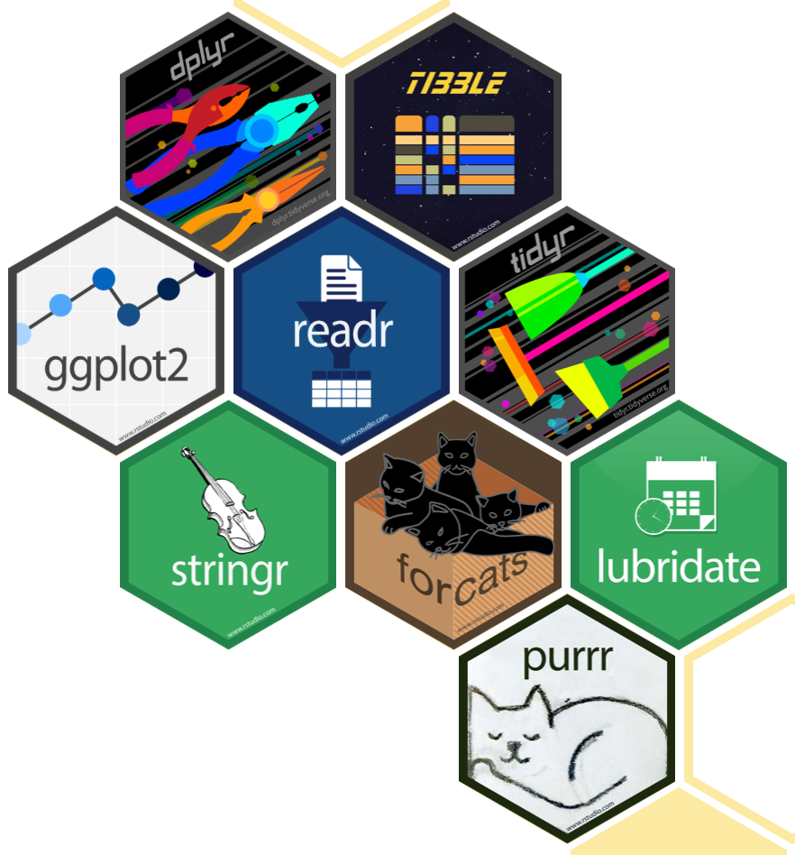
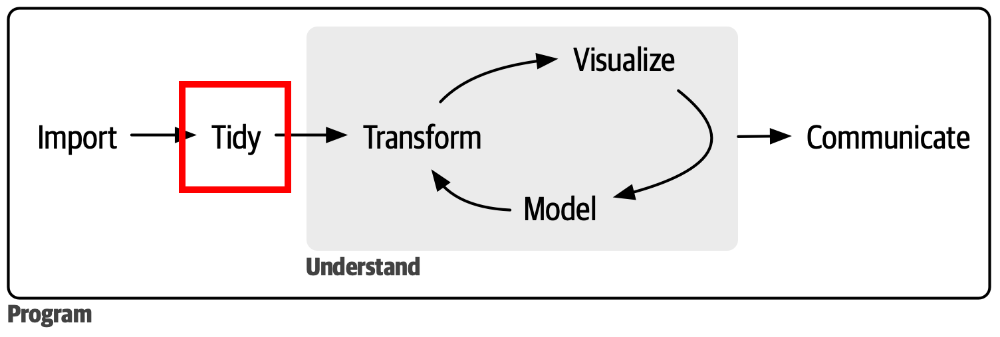
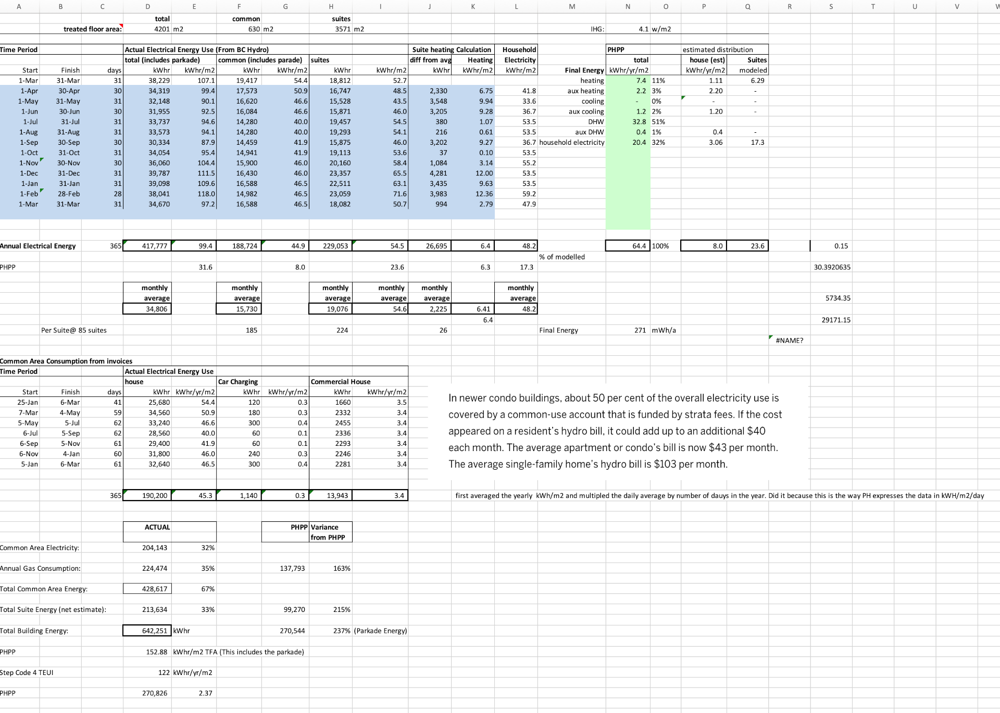
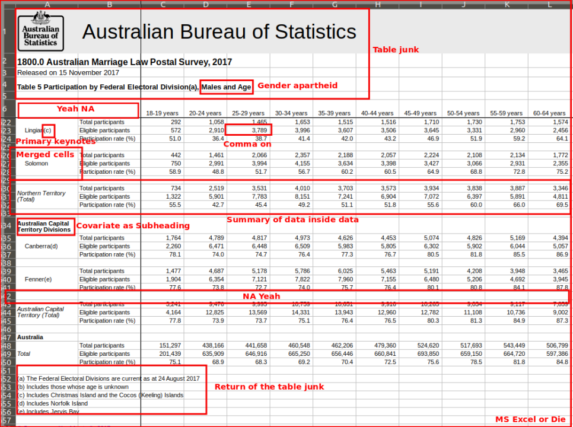
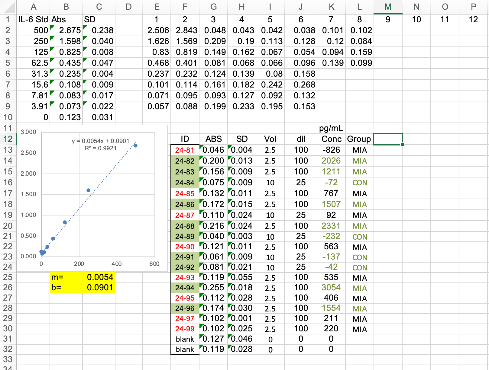

groups val
1 Con_male 56
2 CON_female 61
3 Exp_m 75
4 Exp_F 86Data Wrangling with tidyverse
Reading for Class 03
Learning objectives
At the end of this lesson you will be able to:
- Reconize and define an untidy dataset
- Recognize and convert between long and wide data set formats
- Understand when to use both formats
- Pipe functions together to perform multiple commands in sequence
The problem with messy data
Most scientists are not trained to collect and organize data using tidydata principles. The results are data sets which are hard to follow, difficult to repeat, and challenging to report to journals. Understanding how to collect, organize, and store your data and analyses will make your life easier! Moreover, many journals request raw data submissions along with your manuscript. If you’ve analyzed and organized all your data in R using tidydata principles this process becomes a super simple, rather than tracking all the data across messy spreadsheets.
“Tidy datasets are all alike, but every messy dataset is messy in its own way.”
— Hadley Wickham
The principles of tidydata
- Treat your raw data as immutable.
Try to manipulate the original form of the data as little as possible. The reason is to make the whole data analysis pipeline reproducible and transparent. If you start changing fields on the data spreadsheet you can’t track where those values came from. Manipulating data with code also decreases the chances for errors being introduced to the raw data.
Each variable is a column; each column is a variable.
Each observation is a row; each row is an observation.
Each value is a cell; each cell is a single value.
For example, take the following data
Why might this data be a problem?
- combining 2 observations into one field (group and sex).
- changing the notation styles
Here’s another example
groups val2
1 CON 144_ug/ul
2 CON 63_ug/ul
3 EXP 96_ug/ul
4 EXP 84_ug/ulWhy might this data be a problem?
- the data field contains 2 values the numeric value and the units
The second step after getting your data into R will be data wrangling in order to modify the data so that you can perform an analysis. Luckily R has a whole suite of tools to makes this process easy and most importantly reproducible. This less will teach you practices for effective data wrangling.
The Tidyverse

The Tidyverse which is a collection of R packages that share an underlying design, syntax, and grammer to streamline many main functions used in data science. You can install the complete tidyverse with install.packages("tidyverse"), once the package is installed you can load it using library(tidyverse).
The packages installed in tidyverse include:
dplyrandtidyrare packages for data manipulation to subset, re-arrange, and format your dataset.tibbleis a tidy way of displaying data frames that are easier to view.readris a tidy way to input or read in data into R.purrris a functional programming toolkit to handle looping functions.stringris a way of handling text and character strings.forcatsis a package providing tools to handle categorical variables and discrete (non-continuous) variables.lubridateis a package for working with times and dates.ggplot2is a graphic package to plot your data.
Important
There are nice cheatsheets for each of the packages to demonstrate what they do in detail!
Don’t forget to check out the Help section too!
The BIG picture
We have now progressed to the Tidy part of the data analysis pipeline!

Some not so tidy data
Have you seen or even generated data that looks like this?
example 1

example 2

example 3

Tidy data with tidyr
The next step it to tidy and transform the data into a format that R can use to perform visualization and analysis.
Remember your pipes!
%>% & |>
Wide vs Long data
library(tidyr)
library(palmerpenguins)
# pivot_longer
# pivot_widerhttps://www.youtube.com/watch?v=MKwyauo8nSI
https://posit.co/resources/videos/data-wrangling-with-r-and-rstudio/
unite vs separate
library(tidyr)
library(palmerpenguins)
# unite
# separate_wider_delim
# separate_longer_delim
# unnest_longer(films)dealing with missing values
library(tidyr)
library(palmerpenguins)
# drop_na
# replace_naTransform data with dplyr

Summarize
library(dplyr)
# summarize
# count
# group_by
# filter
# distinct same as unique
# slice
# arrange
# select
# mutate
### n()
### sum()
### mean(), median(), min(), max()
### IQR(), sd(), var(),
# rename
# bind_cols
# bind_rows